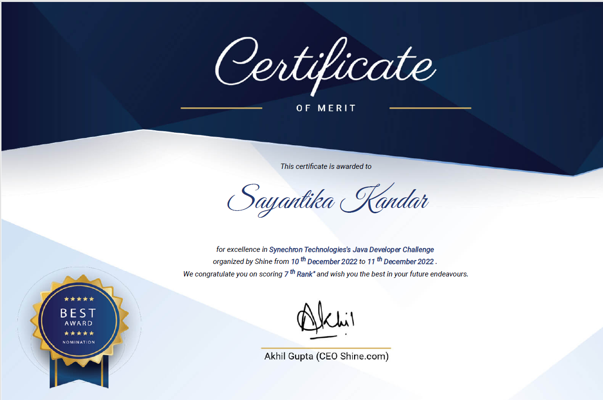
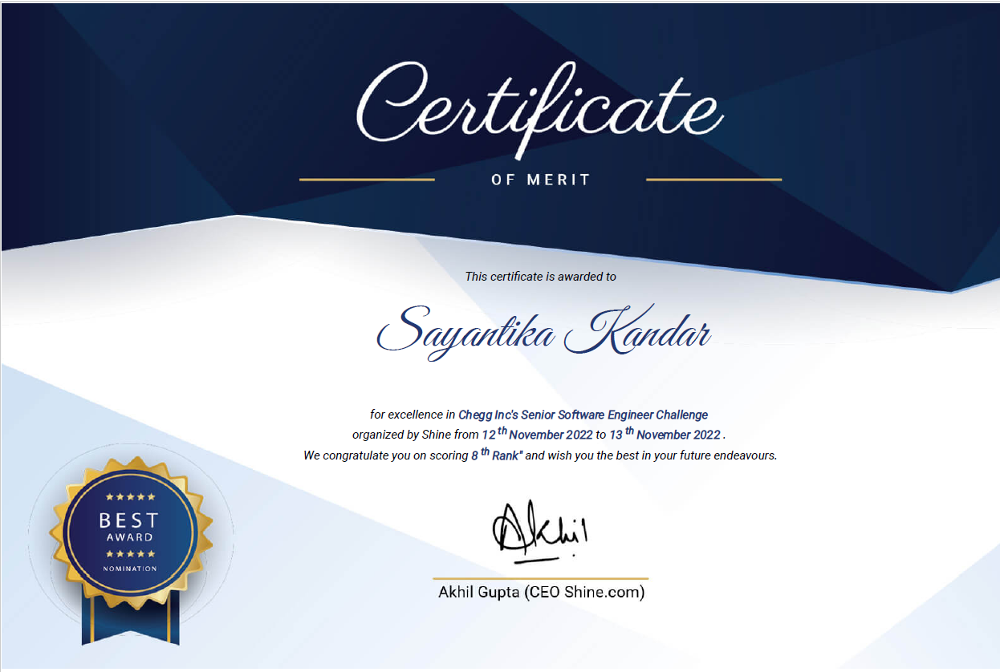

I have built several projects using different technologies. Some are individual and some are group projects.
Research Paper
Published a paper on “Survey of tools and techniques used for data analysis” in the conference named as “ICAEEMCS” in the year 2013.
Discussed two data mining tools i.e. WEKA and RapidMiner and Eclipse BIRT as a business intelligence tool.
Compared working of various data mining models in extraction of information or interesting patterns.
AI Projects
It can answer queries, multiselect files and answer based on multiple files, generate course content based on our query, evaluate subjective tests, analyze case studies, get automatic answers to our questions.
Technologies: Python, Gemini 2.0, Laravel 11, PHP 8.2, HTML, CSS, JavaScript, jQuery, AJAX, Postgres, Git.


Java Projects
This system helped instructors and learners to improve performance in the learning management system.
Technologies: Java 8, JDBC, Python, Postgres, Git, Maven, Drools.
Real Time Chat App | Viral Fission, Jan 2023 - Mar 2023
A real time application where users can register, login and chat with other users.
Technologies: Java 8, Spring Boot, HTML, CSS, MySQL, Thymeleaf, Spring security, WebSocket, Maven
View Project
Member Management, Feb 2022 - Apr 2022
Application to manage members.
Technologies: Java 8, Spring Boot, MySQL, HTML, Bootstrap, Thymeleaf, Maven
View Project
Vehicle Tracking System | Egen, Oct 2018 - Dec 2018
Developed a system that tracks vehicle speed, quantity of fuel, engine coolant value, headlight’s state and throws alerts accordingly.
Technologies: Java 8, Spring Boot, JPA 2.0/Hibernate, Restful, Maven, MySQL, Amazon Web Services (S3, EC2, RDS)
Oracle ERP Project | News America Marketing, Jul 2018 - Sep 2018
The purpose of the project was to upgrade the current ERP application to have added functionalities and fix some previous issues.
Technologies: Java 8, MySQL
Project Management: JIRA
Sudoku Game, Mar 2018 - May 2018
Implemented the Sudoku game using 5 different algorithms namely backtracking, forward checking, arc consistency, value or vertex ordering and simulated annealing. Compared the algorithm performances based on their running time.
Technologies: Java, Git
View Project
Student Survey Website, Sep 2016 - May 2017
Created a website to take a survey, list and search the existing surveys and declare movie ticket winners. Created the project using two different sets of technologies.
Technologies 1: Sep 2016 - Dec 2016
- Server: Tomcat, IDE: Eclipse
- Languages: Java, HTML, CSS, JSF 2.2, EJB 3.1, JPA 2.0/Hibernate, SOAP, Restful
- Database: MySQL
- Cloud Technology: Amazon Web Services (S3, EC2, RDS)
- Languages/Technologies: HTML5, CSS3, JavaScript, Ajax, jQuery, Servlets, JSPs, Struts2, JDBC, JPA 2.0, JSON
- Database: Oracle
Smart Home Appliances, Sep 2016 - Dec 2016 Created a project to connect smart home appliances to perform operations like brewing coffee, controlling window blinds, regulating room temperature (cooling, heating), getting mail, monitoring doors, windows, smoke etc. and getting notification on mobile.
Technologies: Java
View Project
PHP Projects
This system has features like taking courses, giving tests, giving ratings to instructors etc.
Technologies: Laravel, PHP, HTML, CSS, JavaScript, jQuery, AJAX, Postgres, Git.
Database Projects | The Next Milestone Technologies, Feb 2024 – Sep 2024
Created projects for comparing two databases. One project for comparing MySQL databases and another for comparing PostgreSQL databases:
MySQL Database Project
Technologies: HTML, CSS, JavaScript, PHP, MySQL
View Project
PostgreSQL Database Project
Technologies: HTML, CSS, JavaScript, PHP, PostgreSQL
View Project
HR Magazine website | The Next Milestone Technologies, Feb 2024 – Sep 2024
Modified website design, added new features like email verification, logging etc., upgraded the website to Laravel 11, PHP 8.2
Technologies: Laravel, PHP, HTML, CSS, JavaScript, jQuery, AJAX, MySQL, Git, AWS (S3, EC2, CloudWatch)
View Project
Employee Management, Apr 2023 - Jun 2023
Application to manage employees.
Technologies: PHP, MySQL, HTML, CSS
View Project
Online Bookstore, Sep 2022 - Nov 2022
Application to search and order books.
Technologies: HTML, CSS, PHP, MySQL, JavaScript
View Project
Winopoly Project | Win.op.oly Publishing, Dec 2018 - Jul 2021
Built an ERP system as per the business needs of the startup company.
Some of the features include offer manipulation, generating reports, calculating revenue, testing posting of new offers, maintaining offer versions, tracking customers' journey, calculating lead conversion, maintaining agent information, automating daily tasks, interacting with multiple client APIs.
Technologies: Smarty, LAMP, MongoDB, Bootstrap, JavaScript, PHP, Eclipse, SVN
Project Management: Asana
NPCIL Website | NPCIL, June 2012 – Aug 2012
Improved the company’s website.
Technologies: HTML5, PHP, MySQL, Linux
Cookbook, Aug 2012 – Dec 2012
Developed a website that suggests food recipes according to a user’s requirements (high carbohydrate/low carbohydrate) and health problems (diabetic/allergic to certain foods). Also, modified the website using WML for use in mobile devices.
Technologies: HTML, PHP, CSS, MySQL, Wamp Server.
Other Projects
Website for the "Zicklin Women in Business" club of “Zicklin School of Business”.
Technologies: WordPress, JavaScript, HTML, CSS
View Project
Superinterns Website | Superinterns, Jun 2017 – Oct 2017
Improved the company’s website.
Technologies: CSS, HTML, JavaScript, WordPress
University Dashboard, Aug 2017 - Nov 2017
- Created dashboards for students and faculty to visualize class performance and individual performance of students. The student dashboard can help students to improve their performance.
- The professor dashboard can enable professors to help students who are weak.
- It can also help professors to change the course syllabus depending on the student’s performance.
- The dashboards show performance in the form of bar charts, pie charts, line charts, bubble charts and tree map.
View Project
Text Mining using Word2Vec and GloVe, Aug 2017 - Nov 2017
- Compared the performance and accuracy of text classification using word embeddings (Word2Vec and GloVe) and compared the results with standard classifiers.
- Used TF-IDF weighted scheme algorithm to give weights to words and used standard classifiers like Support Vector Machine classifier, Multinomial Naïve Bayes, and Bernoulli’s Naïve Bayes.
Analyzing Profitability of Products | Desmo Exports, Dec 2013 – Mar 2014
A tool which will take several parameters and generate reports which helped the company in analyzing profitability of products.
Technologies: OBIEE 11g, PL/SQL